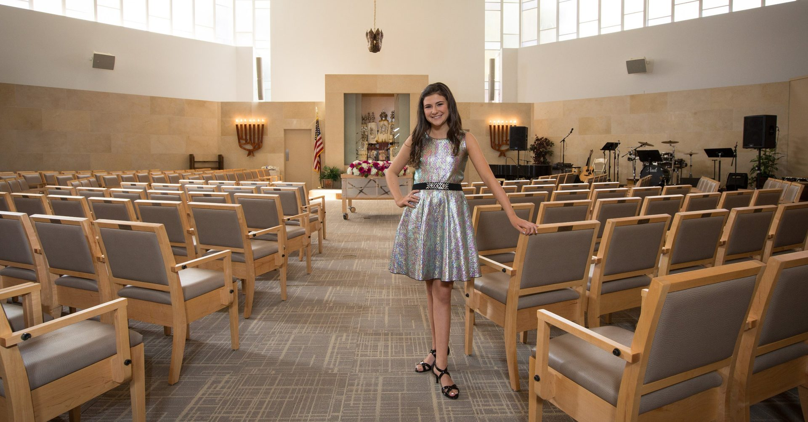
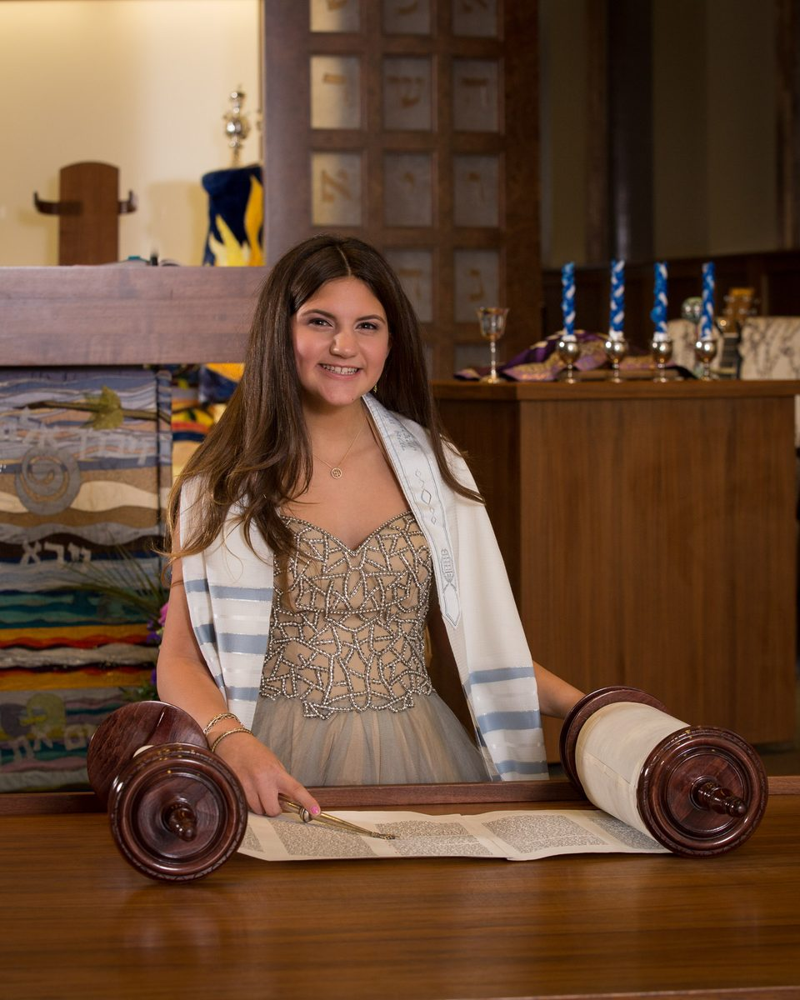
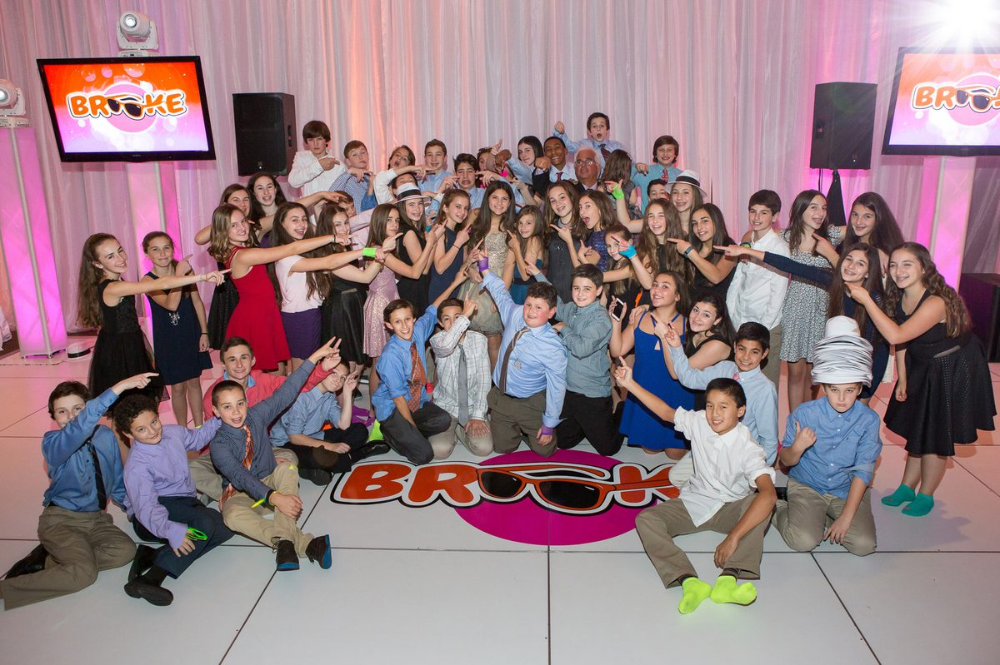

Boston · Massachusetts · New England
Stephen Sedman has been photographing Bar and Bat Mitzvahs for over 30 years — preserving the moments your family will treasure for generations.
The Photographer
For over three decades, I have had the profound privilege of bearing witness to one of Judaism's most sacred rites of passage. I understand the rhythm of a Shabbat morning service, the electricity of a Torah reading, the chaos and beauty of family portraits between the ceremony and reception — and how to capture every heartbeat of it.
Based in the Greater Boston area, I serve families throughout Massachusetts, Rhode Island, New Hampshire, and beyond. My team brings two shooters to every event, ensuring nothing — not the rabbi's gentle smile, not the hora, not the candid moment you'll want to frame — is ever missed.
The Work


What We Capture
Getting-ready moments, tallit and kippah, the nervous excitement before the big moment.
Torah reading, blessings, the aliyah, the rabbi's pride — every sacred element, shot with the discretion the moment deserves.
Generations together. Organized, efficient, and relaxed — because you shouldn't be stressed between synagogue and party.
The hora, the candle lighting, speeches, dancing, every table, every hug. The joy is everywhere — we find it all.
Grandparents beaming. Friends laughing. Parents crying. The in-between moments that become your most treasured photos.
Museum-quality lay-flat albums designed to be opened in 30 years and still take your breath away.
Families We've Served
"Stephen understood the service better than most guests. He knew exactly when to be invisible and when to step forward. The photos look like they belong in a museum."
"We've referred three other families. When you find a photographer who gets it — the traditions, the emotion, the chaos of teenagers on a dance floor — you tell everyone."
"Stephen photographed my daughter's Bat Mitzvah after shooting my son's Bar Mitzvah seven years earlier. That says everything."
"The album arrived and my mother cried for twenty minutes. That is the highest compliment I can give."
Also Available
From the bedeken to the ketubah signing, the chuppah to the first dance — Stephen brings the same reverence and artistry to Jewish weddings. Ask about our special Mitzvah + Wedding family packages.
Explore Jewish Weddings →How It Works
A relaxed conversation — phone or Zoom — to hear about your day and answer every question.
We craft a package that fits your venue, timeline, and vision exactly.
Two photographers, fully equipped, arrived early, ready for anything.
Online proofing gallery delivered within 6 weeks. Albums follow.
Let's make sure every moment of it is preserved beautifully.
Book a Free Consultation